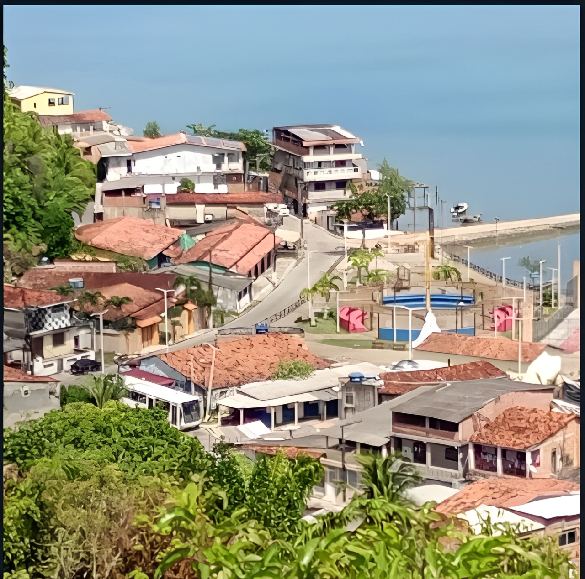
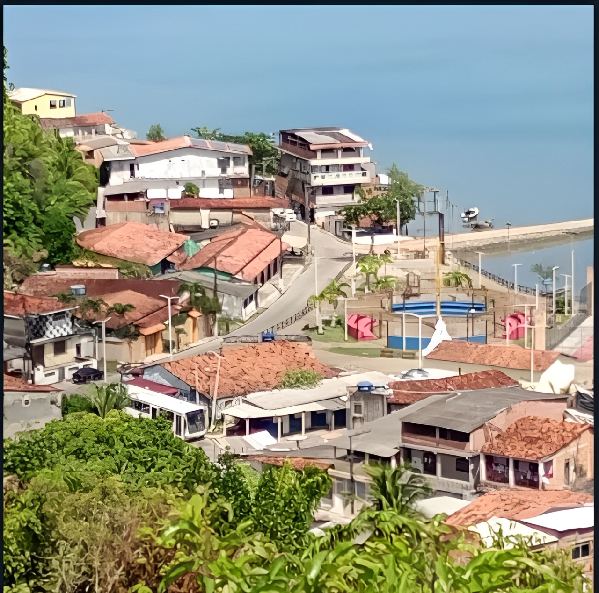

HOME
A História dos Quilombolas
Os quilombolas são descendentes de africanos escravizados que formaram comunidades autônomas, conhecidas como quilombos, durante o período colonial e imperial no Brasil. Essas comunidades eram formadas por pessoas que fugiam da escravidão e buscavam liberdade e autonomia.
Resistência e Fuga:
Buscaram refúgio e/ou novas oportunidades, pequenos grupos da Ilha de Maré, em diferentes períodos, decidiram entao desbravarem e galgar em outras áreas da Baía de Todos os Santos, incluindo a região de Candeias e em passé nasceu a:
Associação dos(as) Quilombolas de Passé

Quem Somos
Associação dos(as) Quilombolas de Passé.
É uma organização não governamental, sem fins lucrativos, que tem como objetivo principal a promoção da cidadania e o desenvolvimento sustentável da comunidade quilombola de Passé na Cidade de Candeias-BA
Passé e Candeias: Crescimento e Transformação: A região de Candeias, incluindo o distrito de Passé, passou por transformações significativas ao longo do tempo. Inicialmente ligada à agricultura (como a produção de cana-de-açúcar), a descoberta de petróleo na década de 1940 impulsionou seu crescimento e atraiu trabalhadores de diversas partes. Passé, inclusive, era um distrito de Salvador antes da emancipação de Candeias em 1958.
Proximidade Geográfica e Conexões: A Ilha de Maré e Candeias estão relativamente próximas geograficamente, ambas localizadas na Baía de Todos os Santos. Historicamente, havia fluxos de pessoas e mercadorias através da baía, facilitando o contato e possíveis deslocamentos entre as comunidades. Pescadores de Passé, por exemplo, tinham como destino a Ilha de Maré para suas atividades..
Estamos comprometidos em construir um futuro mais justo e igualitário para todos.
Nosso foco é a promoção da cidadania e o desenvolvimento sustentável da comunidade quilombola de Passé.

Proximidade Geográfica e Conexões: A Ilha de Maré e Candeias estão relativamente próximas geograficamente, ambas localizadas na Baía de Todos os Santos. Historicamente, havia fluxos de pessoas e mercadorias através da baía, facilitando o contato e possíveis deslocamentos entre as comunidades. Pescadores de Passé, por exemplo, tinham como destino a Ilha de Maré para suas atividades..
Estamos comprometidos em construir um futuro mais justo e igualitário para todos.
Nosso foco é a promoção da cidadania e o desenvolvimento sustentável da comunidade quilombola de Passé.
Projetos
Detalhes dos projetos da ONG...
.jpeg)


.jpeg)